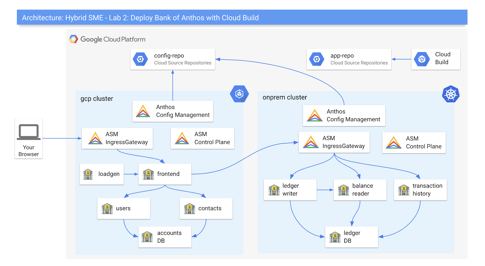

Welcome to the Anthos Workshop labs! Over the course of these labs, you will learn & explore how Anthos can help manage hybrid cloud environments with a consistent set of deployment environments and tools.
1 | ||
2 | ||
3 | ||
4 | ||
5 | ||
6 | ||
7 |

NOTE: As of June 2020, these labs use open-source Istio 1.6.2 and not managed Anthos Service Mesh (ASM). This is because ASM does not yet support multiple clusters (and multi-cluster with non-GKE on GCP) as of mid June 2020. We plan to upgrade these labs to ASM as soon ASM multicluster is publicly available and we have validated the labs with ASM.
If you return to these labs later, your laptop goes to sleep, or your Cloud Shell is spontaneously disconnected, run the following commands:
export PROJECT_ID=<your-sme-project-id>
gcloud config set project $PROJECT_ID
cd $HOME/hybrid-sme/bank-of-anthos-scripts/install
source ./env
source ./common/install-tools.sh
These labs are new for Q3 ‘20, and you may hit a roadblock or a bug. If this happens, email the labs Google Group - hybrid-sme-labs-2020@google.com, and a lab owner will be in touch to help.
Congratulations! You just installed the core Anthos components on your GCP project. Now you're ready to deploy an application onto your simulated hybrid cloud environment.
To clean up your Anthos environment (clusters, firewall rules) but keep your GCP project intact, run the following script:
cd ${HOME}/hybrid-sme/bank-of-anthos-scripts/install
./cleanup.sh